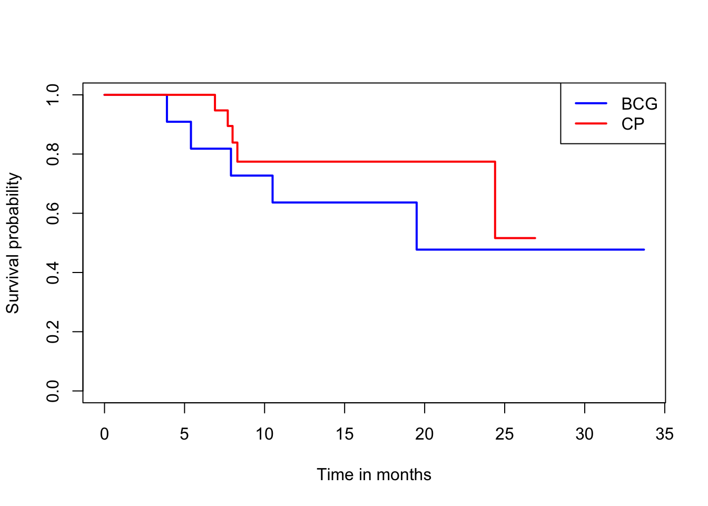

library(tidyverse)
library(kableExtra)
library(ggplot2)
library(here)
library(survival)
library(KMsurv)
library(asaur)
library(survminer)11 생존함수의 비교
11.1 필요한 패키지
11.2 비모수적 방법을 이용한 생존함수의 비교
두 개의 독립 집단에 대하여 다음과 같이 생존시간을 관측하였다고 하자.
\[ \begin{aligned} \text{group 1} \quad & (X_{11}, \delta_{11}), (X_{12}, \delta_{12}) , \dots ,(X_{1 n_1}, \delta_{1 n_1}) \\ \text{group 2} \quad & (X_{21}, \delta_{21}), (X_{22}, \delta_{22}) , \dots ,(X_{2 n_2}, \delta_{2 n_2}) \\ \end{aligned} \]
두 개의 집단에 대한 생존함수가 동일하다는 다음 가설을 고려하자.
\[ H_0: S_1 = S_2 \quad H_1: S_1 \ne S_2 \]
위의 가설은 두 집단의 생존시간을 모두 합쳐서 순서대로 나열하고 중도절단이 없는 자료들에서 다음과 같은 \(2\times 2\) 분할표를 작성한 다음 CMH-검정 통계량(코크란-맨텔-핸젤 검정 통계량, 섹션 3.3 참조)을 이용하여 검정할 수 있다.
| 그룹/반응여부 | 사망 | 생존 | 위험그룹의 합계 |
|---|---|---|---|
| 1 | \(a\) | \(b\) | \(n_1\) |
| 2 | \(c\) | \(d\) | \(n_2\) |
| 합계 | \(m_1\) | \(m_2\) | \(n\) |
위의 \(2\times 2\) 분할표에서 유의할 점은 주어진 시점에서 고려하는 위험집단에 속한 개체들의 수가 \(n_1\) 과 \(n_2\) 이고 각각의 그룹에서 사망한 개체의 수가 \(a\) 와 \(c\) 이다. 또한 각 그룹에서 생존한 개체의 수가 \(b\) 와 \(d\) 이다. 그리고 각 그룹에서 사망한 개체의 수가 \(m_1\) 과 \(m_2\) 이다.
다음과 같은 예제 자료를 고려해보자
\[ \begin{aligned} {\color{red}{\text{[group 1]}}} \quad & \color{red}{3,~~5,~~7,~~9+~~, 18} \\ \text{[group 2]} \quad & 12,~~ 19,~~ 20,~~ 20+,~~ 33+ \\ \end{aligned} \]
두 표본을 합쳐서 순서대로 놓으면 다음과 같다.
\[ {\color{red}{3}},~~{\color{red}{5}},~~{\color{red}{7}},~~{\color{red}{9+}}~~12,~~ {\color{red}{18}}, ~~ 19,~~ 20,~~ 20+,~~ 33+ \]
이제 중도절단이 없는 자료들만 고려하고
\[ {\color{red}{3}},{\color{red}{5}},{\color{red}{7}},12,{\color{red}{18}},19,20 \]
각각 시점에 대하여 \(2\times 2\) 분할표를 작성하고 CMH-검정 통계량을 계산할 수 있다.
먼저 가장 짧은 생존시간 \(X=3\) 이 관측 된 경우 \(2\times 2\) 분할표를 작성해보자.
| 그룹/반응여부 | 사망 | 생존 | 위험그룹의 합계 |
|---|---|---|---|
| 1 | 1 | 4 | 5 |
| 2 | 0 | 5 | 5 |
| 합계 | 1 | 9 | 10 |
첫번째 분할표에서 귀무가설이 참인 경우, 즉 두 그룹의 생존시간에 대한 분포가 동일한 경우 \(a\) 에 대한 기대값은 다음과 같다.
\[ E_0(a) = \frac{n_1 m_1}{n} = \frac{(5)(1)}{10} = 0.5 \]
또한 분산은 다음과 같다.
\[ Var_0 (a) = \frac{n_1 n_2 m_1 m_2}{n^2(n-1)} =\frac{m_1 m_2}{(n-1)} \frac{n_1 n_2}{n^2} = \frac{(1)(9)}{9} \frac{(5)(5)}{10^2} = 0.25 \]
이제 두 번째 생존시간 \(X=5\)이 관측된 경우 \(2\times 2\) 분할표를 작성해보자. 여기서 유의할 점은 \(X=5\)이 관측되기 바로 전에 위험에 처한 인원은 9명이다 (\(n_1=4\), \(n_2=5\)). 이는 첫 번째 그룹에서 한 명이 \(X=3\)에서 사망하였기 때문이다. 따라서 \(X=5\)에서 위험에 처한 인원은 9명이다.
| 그룹/반응여부 | 사망 | 생존 | 위험그룹의 합계 |
|---|---|---|---|
| 1 | 1 | 3 | 4 |
| 2 | 0 | 5 | 5 |
| 합계 | 1 | 8 | 9 |
두번째 분할표에서 귀무가설이 참인 경우, 즉 두 그룹의 생존시간에 대한 분포가 동일한 경우 \(a\) 에 대한 기대값은 다음과 같다.
\[ E_0(a) = \frac{n_1 m_1}{n} = \frac{(4)(1)}{9} = 0.44 \]
또한 분산은 다음과 같다.
\[ Var_0 (a) = \frac{n_1 n_2 m_1 m_2}{n^2(n-1)} = \frac{(1)(8)}{8} \frac{(5)(4)}{9^2} = 0.2469 \] 세 번째 생존시간 \(X=7\)이 관측된 경우 위의 계산과 유사하게 \(2\times 2\) 분할표를 작성하고 \(a\) 의 기대값과 분산을 계산할 수 있다. 참고로 원자료에서 생존시간이 \(X=9\) 로 관측된 경우는 중도절단이 된 관측값이므로 분할표를 작성을 하지 않는다.
이제 네 번째 생존시간 \(X=12\)이 관측 된 경우 \(2\times 2\) 분할표를 작성해보자. 생존시간 \(X=12\)은 두 번째 그룹에서 사건이 발생한 것에 유의하자.
| 그룹/반응여부 | 사망 | 생존 | 위험그룹의 합계 |
|---|---|---|---|
| 1 | 0 | 1 | 1 |
| 2 | 1 | 4 | 5 |
| 합계 | 1 | 5 | 6 |
네번째 분할표에서 귀무가설이 참인 경우, 즉 두 그룹의 생존시간에 대한 분포가 동일한 경우 \(a\) 에 대한 기대값은 다음과 같다.
\[ E_0(a) = \frac{n_1 m_1}{n} = \frac{(1)(1)}{6} = 0.17 \]
또한 분산은 다음과 같다.
\[ Var_0 (a) = \frac{n_1 n_2 m_1 m_2}{n^2(n-1)} = \frac{(1)(5)}{5} \frac{(1)(5)}{6^2} = 0.1388 \]
이런 식으로 중도절단이 되지 않은 생존시간이 발생했을 때 마다 위험집단에 있는 개체들에 대하여 \(2\times 2\) 분할표를 작성하여 \(a\) 의 기대값과 분산을 계속 계산한다. 중도 절단이 되지 않은 7개의 생존시간에 대한 \(2\times 2\) 분할표들에서 얻은 계산결과를 정리하면 다음표와 같다.
| \(X\) | \(n\) | \(m_1\) | \(n_1\) | \(a\) | \(E_0(a)\) | \(a-E_0(a)\) | \(m_1 m_2/(n-1)\) | \(n_1 n_2 /n^2\) |
|---|---|---|---|---|---|---|---|---|
| 3 | 10 | 1 | 5 | 1 | 0.50 | 0.50 | 1 | 0.2500 |
| 5 | 9 | 1 | 4 | 1 | 0.44 | 0.56 | 1 | 0.2469 |
| 7 | 8 | 1 | 3 | 1 | 0.38 | 0.62 | 1 | 0.2344 |
| 12 | 6 | 1 | 1 | 0 | 0.17 | -0.17 | 1 | 0.1389 |
| 18 | 5 | 1 | 1 | 1 | 0.20 | 0.80 | 1 | 0.1600 |
| 19 | 4 | 1 | 0 | 0 | 0 | 0 | 1 | 0 |
| 20 | 3 | 1 | 0 | 0 | 0 | 0 | 1 | 0 |
이제 위의 표를 이용하여 다음과 같이 CMH 통계량을 계산할 수 있다.
\[ CMH ~~\chi^2 = \frac {[ \sum (a-E_0(a))]^2}{ \sum [m_1 m_2/(n-1)][n_1 n_2 /n^2] } \tag{11.1}\]
여기서
\[ \begin{aligned} \sum (a-E_0(a)) & = 0.50 + 0.56 + 0.62 -0.17 + 0.80 \\ & = 2.31 \\ \sum [m_1 m_2/(n-1)][n_1 n_2 /n^2] & = (1)(0.2500) + (1)(0.2469) + (1)(0.2344) \\ &+ (1)(0.1389) + (1)(0.1600) + (1)(0) + (1)(0) \\ & = 1.0302 \end{aligned} \] 따라서
\[ CMH ~~\chi^2 = \frac{(2.31)^2} {1.0302} = 5.1796 \]
유의수준 \(\alpha=0.05\)에서 \(\chi^2(1,0.95) = 3.84159 <5.1796\)이므로 \(H_0\)를 기각한다. 즉 두 집단의 생존함수는 같지 않다.
t <- c(3, 5, 7, 9, 12, 18, 19, 20, 20, 33)
delta <- c(1,1,1,0,1,1,1,1,0,0)
treat <- c("A", "A", "A", "A", "B", "A", "B", "B", "B", "B")
df <- data.frame(t, delta, treat)
df t delta treat
1 3 1 A
2 5 1 A
3 7 1 A
4 9 0 A
5 12 1 B
6 18 1 A
7 19 1 B
8 20 1 B
9 20 0 B
10 33 0 Bres.comp <- survdiff(Surv(t, delta) ~ treat, data=df)
res.compCall:
survdiff(formula = Surv(t, delta) ~ treat, data = df)
N Observed Expected (O-E)^2/E (O-E)^2/V
treat=A 5 4 1.69 3.18 5.2
treat=B 5 3 5.31 1.01 5.2
Chisq= 5.2 on 1 degrees of freedom, p= 0.02 11.3 일반화 로그 순위 검정
식 11.1 에 주어진 로그-순위 건정법은 다음과 같이 각 시점마다 다른 가중치 \(w_i\)를 적용하여 일반화 할 수 있다.
\[ CMH ~~\chi^2 = \frac {[ \sum w_i (a-E_0(A))]^2}{ \sum w_i^2 [m_1 m_2/(n-1)][n_1 n_2 /n^2] } \tag{11.2}\]
아래 표는 식 11.2 에 주어진 일반화 로그-순위 검정에서 가준치의 형태와 해당하는 추정량의 이름이 나타나 있다.
| 가중치 \(w_i\)의 형태 | 추정량 이름 | 참고 |
|---|---|---|
| 1 | Log rank | |
| \(n_i\) | Wilcoxon | \(n_i\) 는 위험집단의 수 |
| \(\sqrt{n_i}\) | Tarone–Ware | |
| \(\tilde S(t_i)\) | Peto | \(\tilde S(t_i)\)는 그룹을 합쳐서 구한 생존함수 추량 |
| \(\hat S (t_{i-1})^p [1 − \hat S(t_{i-1})]^q\) | Flemington–Harrington | \(p\) 와 \(q\)는 0 또는 1 |
11.4 예제
11.4.1 예제 7.3
참고도서 Jaewon Lee (2005) 의 예제 7-3은 흑생종 환자들에 대한 연구로 BCG 와 CP 방법의 생존시간 연장 효과를 비교하기 위한 실험이다. 환자들 중 11명은 BCG 처리를 받고 나머지 19명은 CP 처리를 받았다. 두 그룹의 생존시간에 대한 분포가 다른지 로그-순위 검정을 적용해보자.
먼저 자료는 example73.txt 에 저장되어 있다.
df73 <- read.csv(here("data","example73.txt"), header = T, sep="")
df73$treat <- factor(df73$treat, level=c(1,2), labels = c("BCG", "CP"))
df73 time censor treat
1 33.7 0 BCG
2 3.9 1 BCG
3 10.5 1 BCG
4 5.4 1 BCG
5 19.5 1 BCG
6 23.8 0 BCG
7 7.9 1 BCG
8 16.9 0 BCG
9 16.6 0 BCG
10 33.7 0 BCG
11 17.1 0 BCG
12 8.0 1 CP
13 26.9 0 CP
14 21.4 0 CP
15 18.1 0 CP
16 16.0 0 CP
17 6.9 1 CP
18 11.0 0 CP
19 24.8 0 CP
20 23.0 0 CP
21 8.3 1 CP
22 10.8 0 CP
23 12.2 0 CP
24 12.5 0 CP
25 24.4 1 CP
26 7.7 1 CP
27 14.8 0 CP
28 8.2 0 CP
29 8.2 0 CP
30 7.8 0 CP로그-순위검정은 함수 survdiff() 를 이용하여 다음과 같이 수행할 수 있다.
exam73res <- survdiff(Surv(time, censor) ~ treat, data=df73)
exam73resCall:
survdiff(formula = Surv(time, censor) ~ treat, data = df73)
N Observed Expected (O-E)^2/E (O-E)^2/V
treat=BCG 11 5 3.68 0.469 0.747
treat=CP 19 5 6.32 0.274 0.747
Chisq= 0.7 on 1 degrees of freedom, p= 0.4 exam73comp <- survfit(Surv(time, censor) ~ treat, data=df73)
plot(exam73comp, xlab="Time in months", ylab="Survival probability", col=c("blue", "red"), lwd=2)
legend("topright", legend=c("BCG", "CP"), col=c("blue","red"), lwd=2)